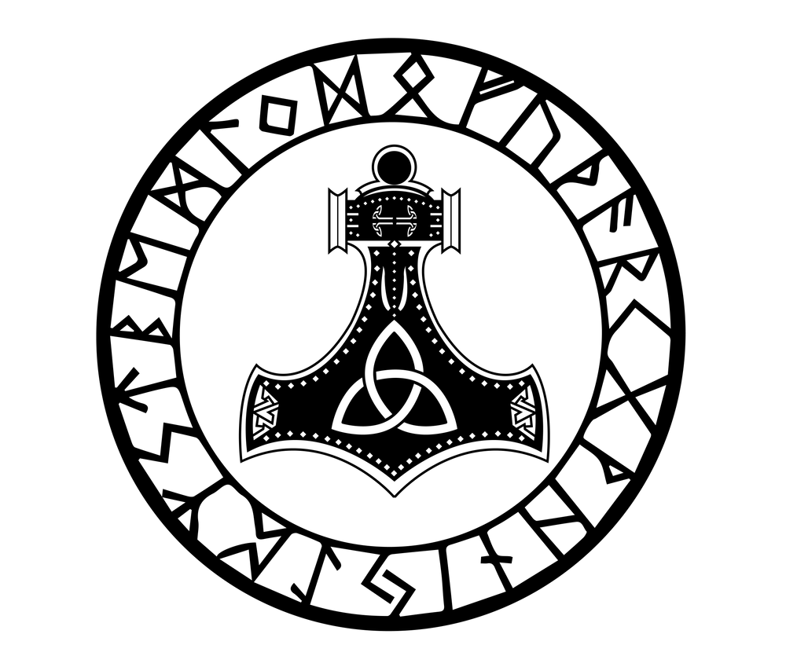
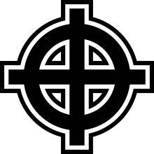
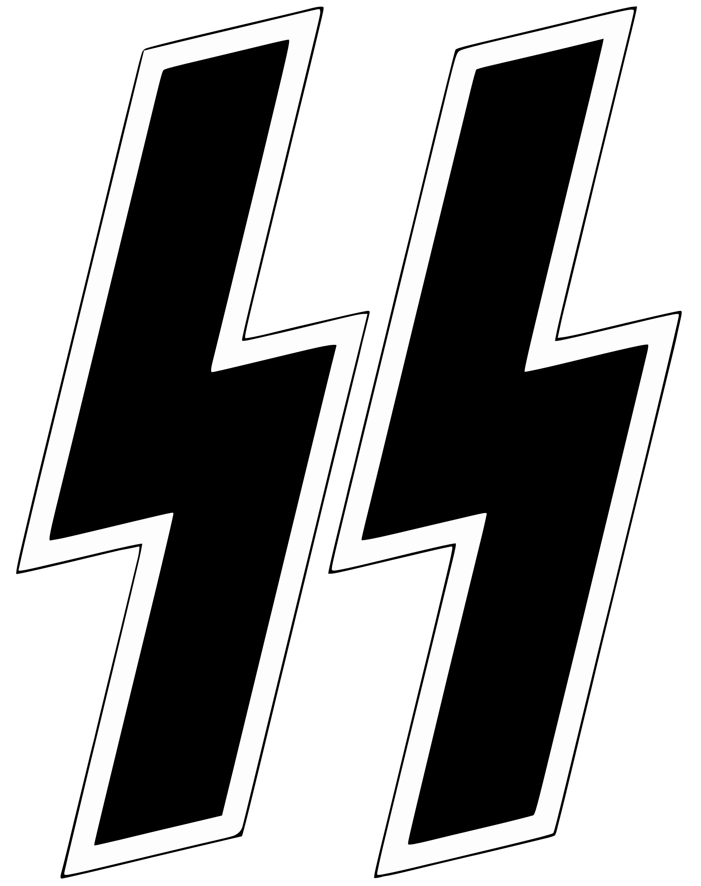
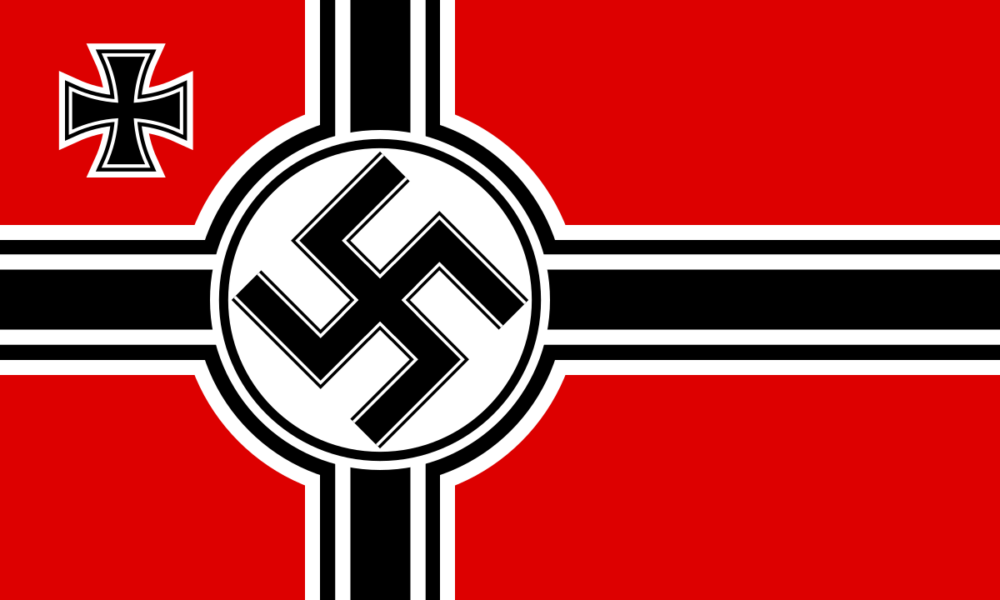
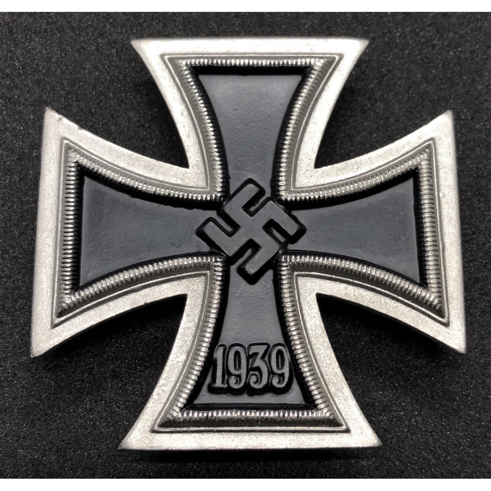
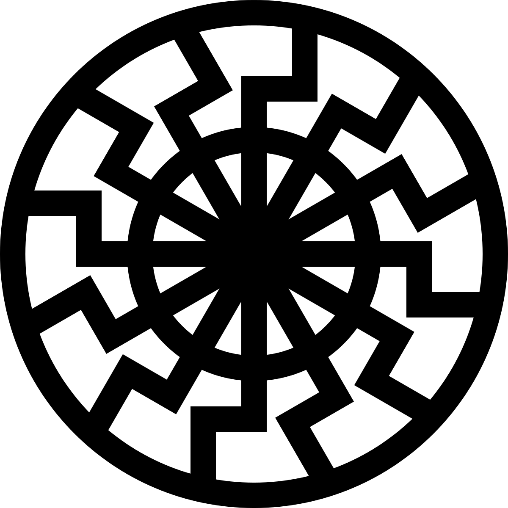
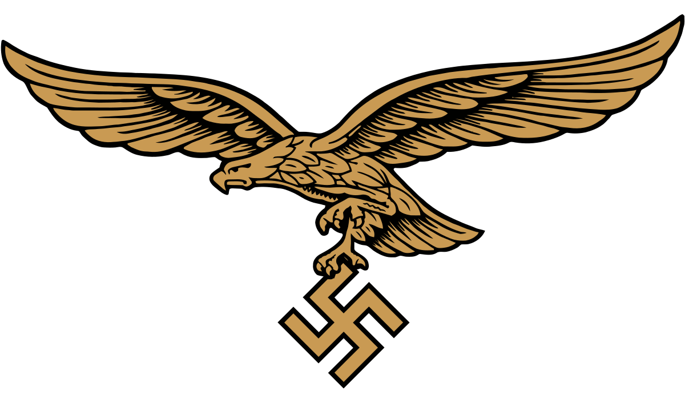

Simbolos
También tenemos al Mjolnir, aunque este es más usado por grupos neonazis, pero fue utilizado aunque escasamente por los nazis en su época,es usado para representar una herencia germanica o nordica. 
La cruz celta fue utilizada por los nazi para representar la herencia germánica y la conexión con las antiguas tradiciones de Europa Central y del Norte. 
El Reichsadler, o águila del Reich, era un águila bicéfala que se convirtió en el emblema del estado alemán bajo el régimen nazi.
Las runas de las SS (Schutzstaffel), que consistían en dos runas semejantes a la "S" y la "Z", se convirtieron en un símbolo distintivo de la organización paramilitar de las SS y se utilizaron en sus uniformes y emblemas. 
El Totenkopf, o calavera, era un símbolo utilizado por las SS y otros cuerpos paramilitares nazis. A menudo se representaba como una calavera sobre dos huesos cruzados y simbolizaba la muerte y el sacrificio

La bandera roja con la esvástica en el centro se convirtió en la bandera oficial del partido nazi y del estado alemán durante el Tercer Reich. La esvástica en el centro de la bandera roja representaba la identidad nacional y la ideología del nacional socialismo. 
La Cruz de Hierro era una condecoración militar utilizada en Alemania desde el siglo XIX. Durante el Tercer Reich, la Cruz de Hierro se convirtió en un símbolo de valor y heroísmo militar, y fue otorgada a soldados por sus acciones en combate. 
La Wolfsangel era un símbolo utilizado por algunas unidades paramilitares nazis y más tarde por la Waffen-SS. Se representaba como un gancho o trampa para lobos y simbolizaba la ferocidad y la voluntad de lucha.

La Leibstandarte SS Adolf Hitler fue una unidad de élite de las SS que eventualmente se convirtió en la guardia personal de Hitler. Su insignia presentaba las letras "LAH" estilizadas, superpuestas con una esvástica y una llama.
Este es un símbolo esotérico que fue utilizado por algunos sectores del régimen nazi. Consiste en una esvástica rodeada por doce rayos, lo que le da la apariencia de un sol negro. Se cree que simboliza el poder y la supremacía arios. 
Las runas, antiguos caracteres alfabéticos utilizados en las escrituras germánicas y nórdicas, fueron utilizadas por los nazis en su iconografía. La runa Othala, en particular, fue utilizada para representar la herencia y la conexión con la tierra de los antepasados.
También conocida como la cruz solar, era un símbolo utilizado por las SS y otras organizaciones nazis. Se asemeja a una esvástica giratoria y se cree que representa el sol y la energía vital.
Utilizado por las Juventudes Hitlerianas y otras organizaciones juveniles nazis, el león rampante representaba la fuerza, el coraje y la agresividad.

El Águila de la Luftwaffe fue un símbolo usado por la Fuerza Aérea Alemana durante el Tercer Reich nazi. Representaba el poder del régimen y consistía en un águila sosteniendo una esvástica. 